EP1N-06-01 WS
HERO 臉朝下攤在畫面中央偏前的泥地上，四肢張開；畫面上方、他身後是逐漸收合的時光隧道藍光；周圍是森林空地與泥地。相機貼近地面，和趴著的他同高。
附的參考圖：ENV_ARRIVE_AM REF_HERO REF_PORTAL
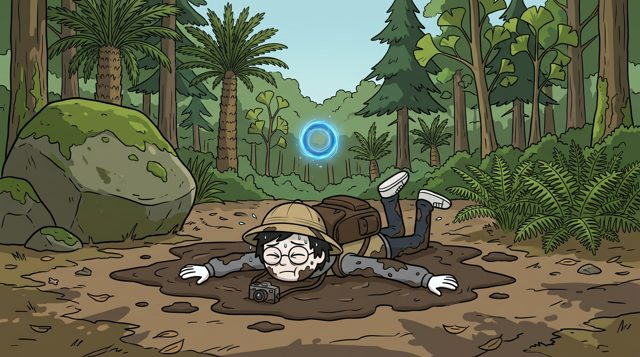
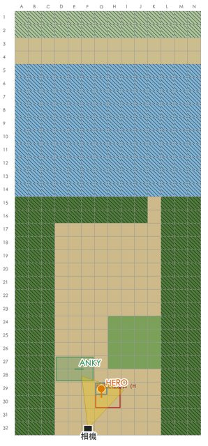
同一塊地在不同場、不同集都會出現，畫出來卻每次不一樣。這頁把每個重複場景用到的格子列出來，對照目前畫成什麼樣子。
地圖：arrive.json（白天）、arrive_dusk.json（黃昏）
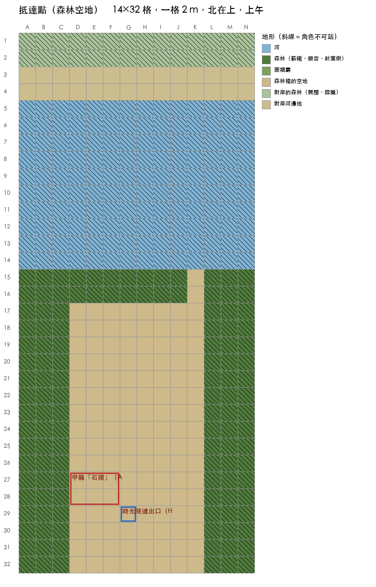
arrive.json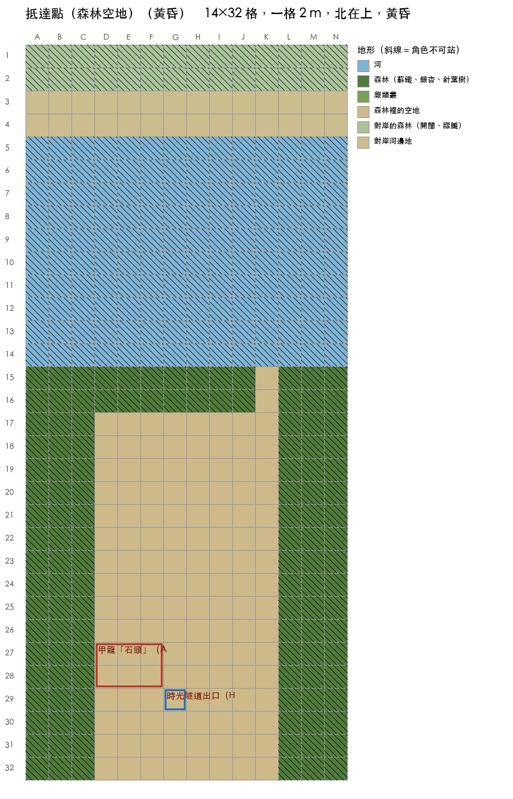
arrive_dusk.json圖例（抵達點（森林空地））
地形
地上物（紅框；藍框＝空中）
G29–H30D27–F28G29圓點＝角色（淡色＝這格沒入鏡） 短線＝面向 黑框＝相機 黃色＝相機視野
圖例（抵達點（森林空地）（黃昏））
地形
地上物（紅框；藍框＝空中）
G29–H30D27–F28G29圓點＝角色（淡色＝這格沒入鏡） 短線＝面向 黑框＝相機 黃色＝相機視野
EP1-new 每格放 Claude 選的那張；沒有選圖紀錄的會標出來
右邊是這格的地圖，符號看每段開頭的圖例
圖例（抵達點（森林空地））
地形
地上物（紅框；藍框＝空中）
G29–H30D27–F28G29圓點＝角色（淡色＝這格沒入鏡） 短線＝面向 黑框＝相機 黃色＝相機視野
HERO 臉朝下攤在畫面中央偏前的泥地上，四肢張開；畫面上方、他身後是逐漸收合的時光隧道藍光；周圍是森林空地與泥地。相機貼近地面，和趴著的他同高。
附的參考圖：ENV_ARRIVE_AM REF_HERO REF_PORTAL


HERO 在畫面中央，撐起上半身坐在泥裡，一手半舉要拍；一隻蚊子在他臉前方偏上嗡嗡飛。前景是泥地。
附的參考圖：ENV_ARRIVE_AM REF_HERO REF_PORTAL
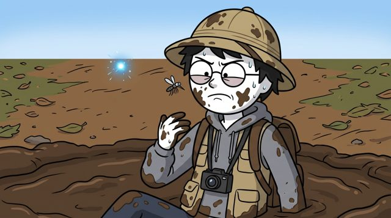
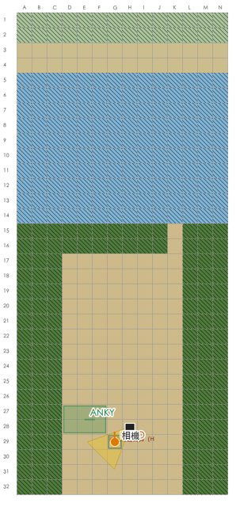
手機幾乎塞滿畫面，螢幕正對鏡頭，上面只有一個轉到一半的圓形載入圈圈，沒有任何文字；HERO 的白色拇指壓在手機下緣兩角。
附的參考圖：ENV_ARRIVE_AM REF_HERO REF_PROPS
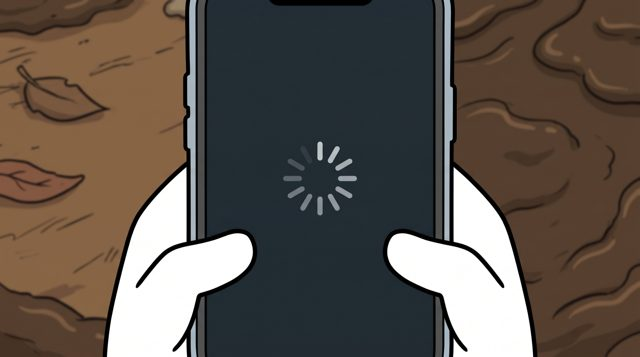
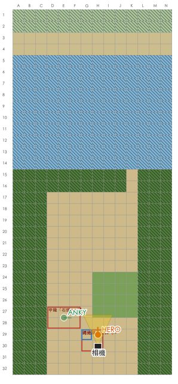
HERO 在畫面中央，胸部以上；一手把手機拿低在胸前，螢幕上是訊號槓打叉的『沒訊號』圖示（無文字）；他對著鏡頭一臉死臉。
附的參考圖：ENV_ARRIVE_AM REF_HERO
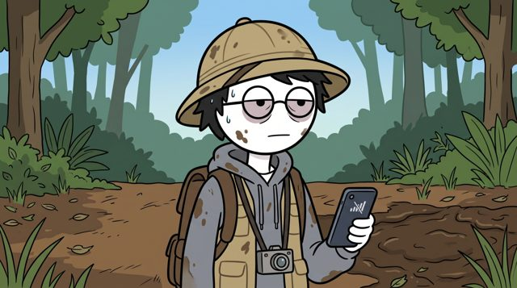
HERO 站在畫面中央偏左，一叢叢蕨類淹到他腰部，一手撥開蕨葉、轉頭往畫面右方張望；偽裝成石頭的甲龍還在畫面右方框外，尚未入鏡。
附的參考圖：ENV_ARRIVE_AM REF_HERO REF_PORTAL
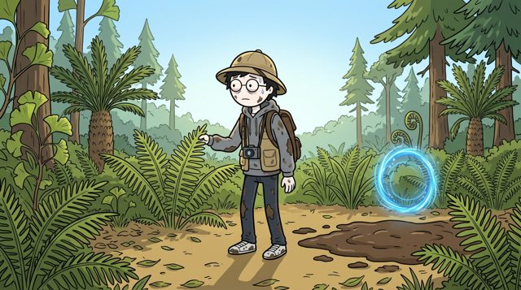
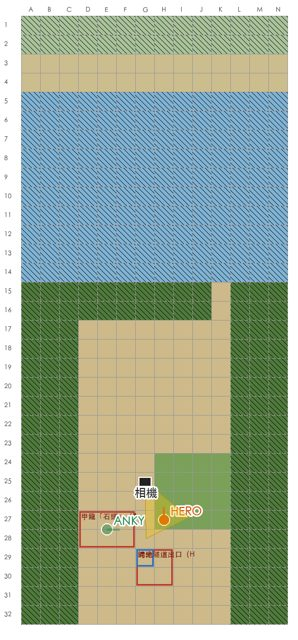
畫面中央是一座被青苔完全蓋住、看起來像大石頭的低矮土丘（睡著的甲龍，頭在右、尾在左）；HERO 坐在它背上，身形明顯比這團大東西小，擦著汗、放鬆。這是錨點鏡頭（第 17 場會回到同一處）。
附的參考圖：ENV_ARRIVE_AM REF_HERO REF_ANKY PAIR2_ANKY
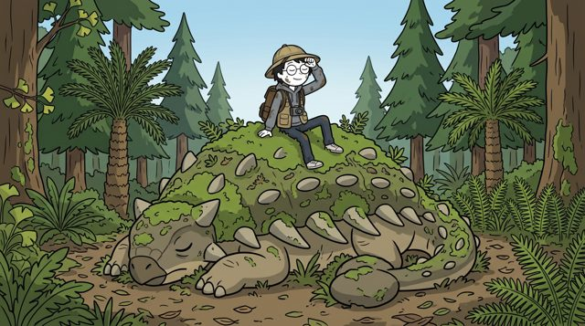
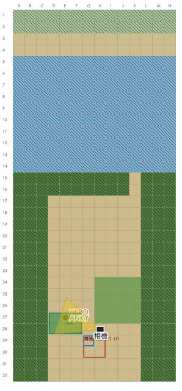
遠一級：整座青苔石丘（睡著的甲龍）連同坐在上面的小小 HERO 都在空地裡，環境是重點，更能看清他與這團龐然大物的大小關係。
附的參考圖：ENV_ARRIVE_AM REF_HERO REF_ANKY PAIR2_ANKY REF_PORTAL
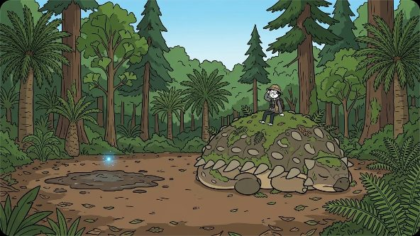
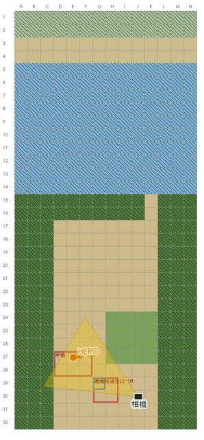
畫面被一隻爬蟲類眼睛和周圍帶青苔的鱗甲皮膚塞滿；眼皮眨到一半，剛掀開一條縫；四周是青苔與疙瘩狀的甲片。沒有 HERO。
附的參考圖：ENV_ARRIVE_AM REF_ANKY
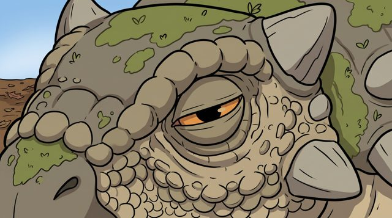
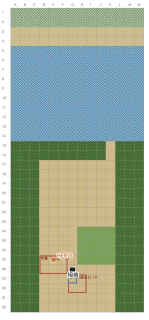
甲龍側躺橫跨整個畫面：右端是低矮的骨質頭（一隻半開的睡眼），背上滿是甲片與青苔，左端是沉重尾巴末端一顆大骨錘；HERO 站在畫面最右、緊貼著甲龍，明顯比這隻動物的體長小一截，整個人僵住。
附的參考圖：ENV_ARRIVE_AM REF_HERO REF_ANKY PAIR2_ANKY
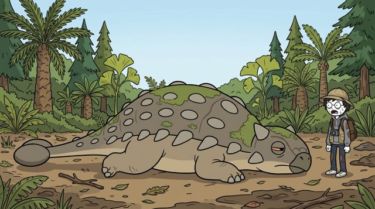
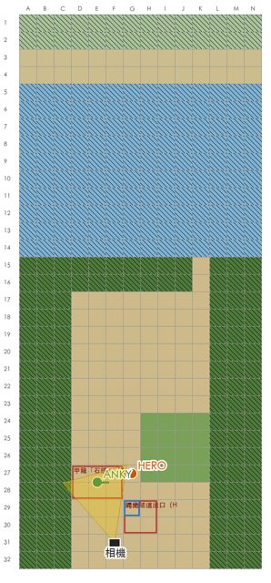
遠一級：側躺的整隻甲龍與旁邊渺小的 HERO 都在空地裡，環境為主，確保 6 公尺長的甲龍連尾錘都完整入鏡、大小對比更清楚。
附的參考圖：ENV_ARRIVE_AM REF_HERO REF_ANKY PAIR2_ANKY
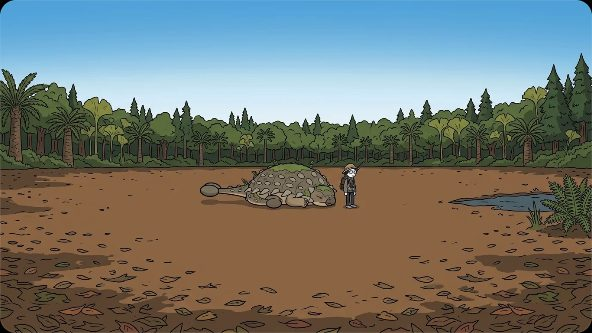
前景 HERO 以誇張踮腳姿勢往畫面右方潛行、回頭往左後方看；畫面左方背景是睡著的青苔甲龍（低矮土丘、眼睛閉著）。HERO 明顯比那團動物小。
附的參考圖：ENV_ARRIVE_AM REF_HERO REF_ANKY PAIR2_ANKY
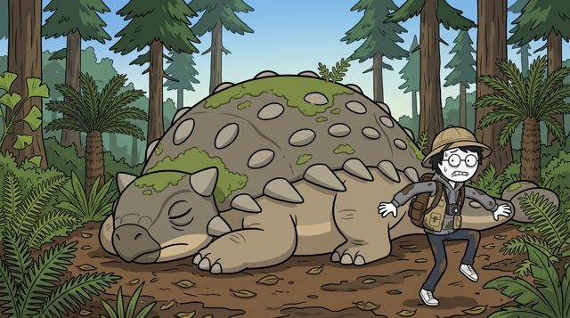
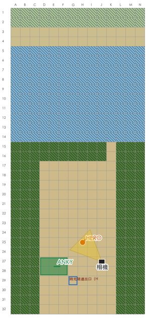
遠一級：HERO 踮腳往右潛行在前、睡著的甲龍土丘在左後方，周圍空地也入鏡，大小關係更清楚。
附的參考圖：ENV_ARRIVE_AM REF_HERO REF_ANKY PAIR2_ANKY
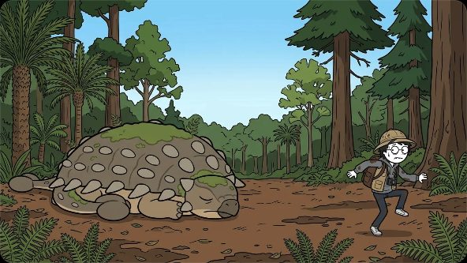
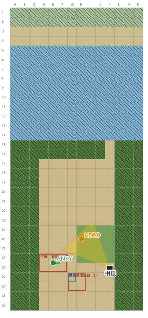
HERO 在畫面中央、腰部以上；把背包拿下來捧在胸前打開，低頭往裡看，放水壺的主袋明顯空空的。
附的參考圖：ENV_ARRIVE_AM REF_HERO REF_PORTAL
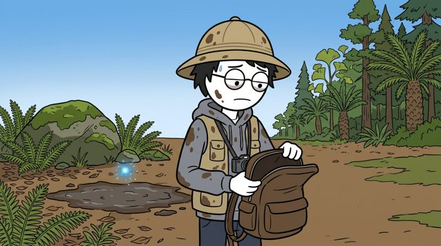
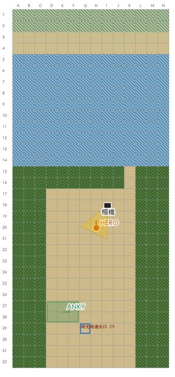
HERO 在畫面中央、腰部以上；身體一頓、抬頭把頭偏向畫外上方（北邊缺口／水聲方向），一手虛攏在耳邊，挑起一邊眉毛。視線把觀眾帶往缺口方向，接下一場的河。
附的參考圖：ENV_ARRIVE_AM REF_HERO
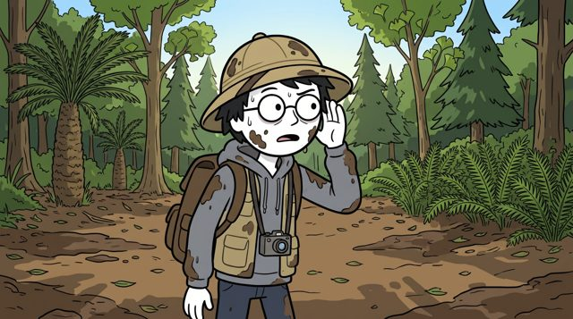
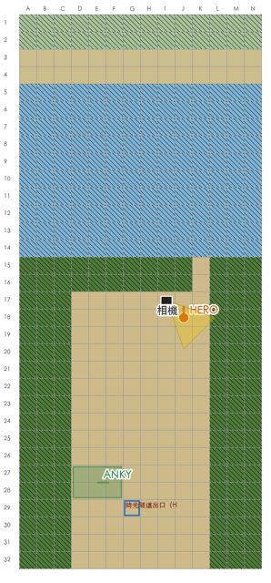
EP1-new 每格放 Claude 選的那張；沒有選圖紀錄的會標出來
右邊是這格的地圖，符號看每段開頭的圖例
圖例（抵達點（森林空地）（黃昏））
地形
地上物（紅框；藍框＝空中）
G29–H30D27–F28G29圓點＝角色（淡色＝這格沒入鏡） 短線＝面向 黑框＝相機 黃色＝相機視野
正中偏下是長滿青苔的大石頭（ANKY），HERO 是遠方一個小小的身影往鏡頭方向踉蹌而來；黃昏，夕陽在畫面右側（西）。
附的參考圖：ENV_ARRIVE_DUSK_NORIVER REF_HERO_NOHAT REF_ANKY PAIR2_ANKY
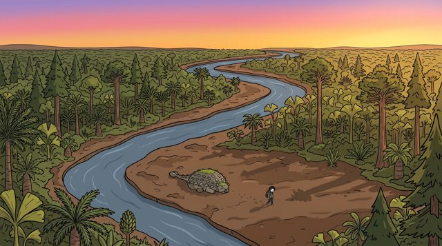
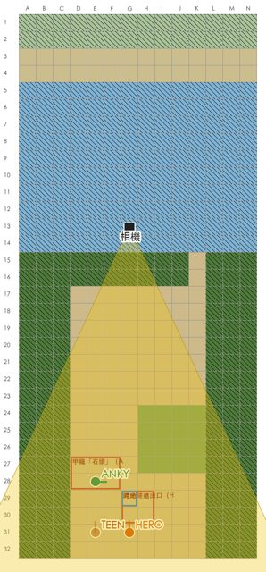
HERO 蜷在畫面中央偏下，貼著石頭東端；ANKY 巨大的側腹占去畫面左上方與背景，像一面牆。
附的參考圖：ENV_ARRIVE_DUSK_NORIVER REF_HERO_NOHAT REF_ANKY PAIR2_ANKY
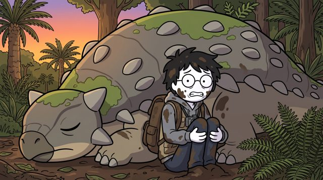
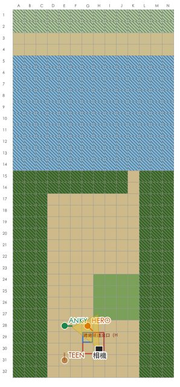
拉遠一級：HERO 膝上入鏡、更小更無助，石頭側腹占更大面積壓在他身上。
附的參考圖：ENV_ARRIVE_DUSK_NORIVER REF_HERO_NOHAT REF_ANKY PAIR2_ANKY
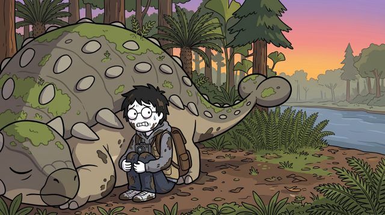
石頭（ANKY）在畫面中央偏右像一座土丘；TEEN 從左（南）側全速衝來、頭頸撞在石頭上；HERO 蜷縮在前景右側（東端、近鏡頭）別臉發抖。
附的參考圖：ENV_ARRIVE_DUSK_NORIVER REF_HERO_NOHAT REF_TEEN REF_ANKY PAIR2_TEEN PAIR2_ANKY
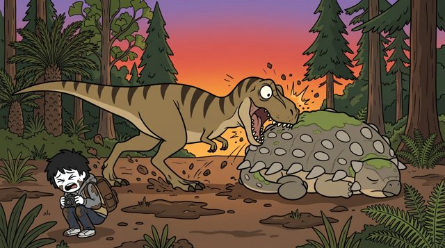
拉遠一級：TEEN 整隻（含尾）清楚入鏡，石頭與蜷縮的 HERO 都在，周圍環境更多。
附的參考圖：ENV_ARRIVE_DUSK_NORIVER REF_HERO_NOHAT REF_TEEN REF_ANKY PAIR2_TEEN PAIR2_ANKY
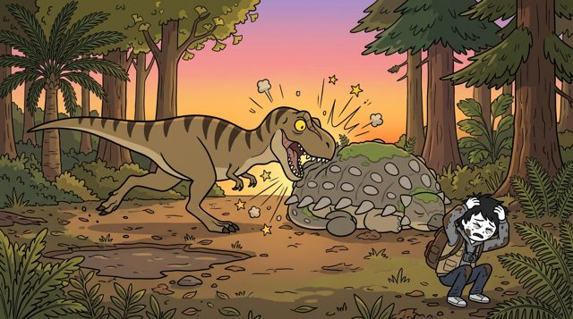
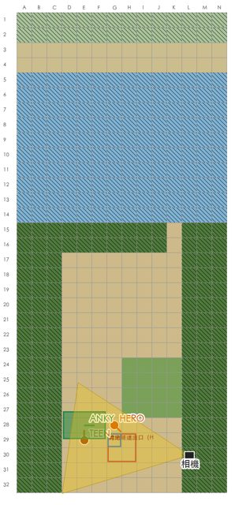
畫面整個被一片長青苔的石頭表面占滿，正中一隻眼睛忽然睜開。
附的參考圖：ENV_ARRIVE_DUSK_NORIVER REF_ANKY
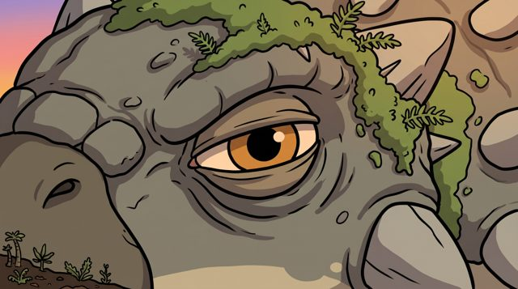

ANKY 側身占據畫面下半，尾錘（畫面右側＝西）正揮到一半；青少年暴龍被打飛到畫面左上方（東），四肢亂揮。
附的參考圖：ENV_ARRIVE_DUSK_NORIVER REF_ANKY REF_TEEN
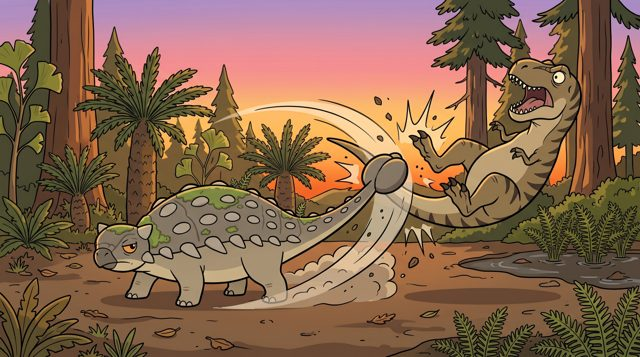
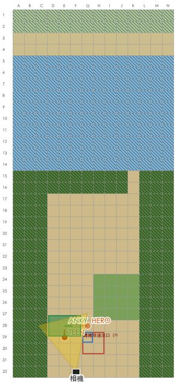
HERO 在畫面右側（東）小小地站起偷看；ANKY 的大頭在畫面左側（西）轉過來，一隻眼睛落在他身上；兩人隔著畫面對看。
附的參考圖：ENV_ARRIVE_DUSK_NORIVER REF_HERO_NOHAT REF_ANKY PAIR2_ANKY
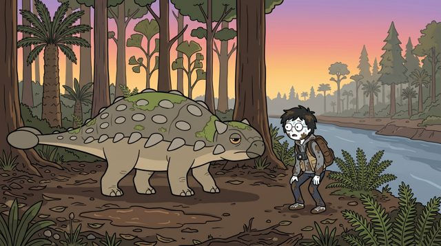
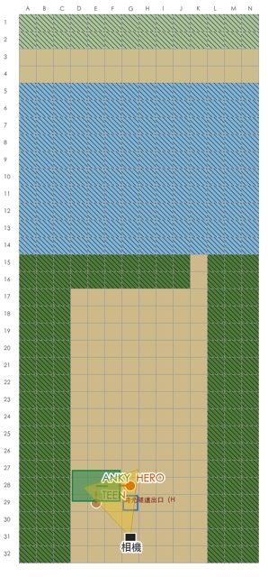
拉遠一級：HERO 與 ANKY 之外帶進更多周圍空地，凸顯一人一龍在黃昏裡對看的孤靜。
附的參考圖：ENV_ARRIVE_DUSK_NORIVER REF_HERO_NOHAT REF_ANKY PAIR2_ANKY
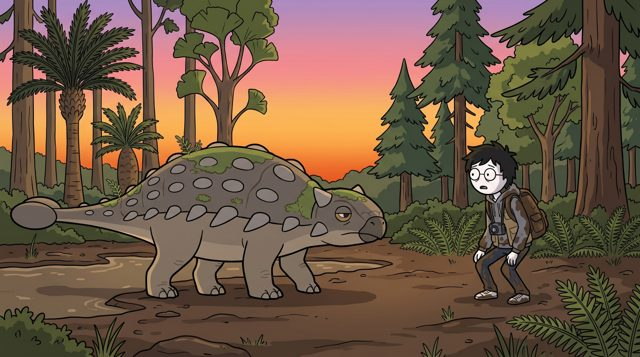
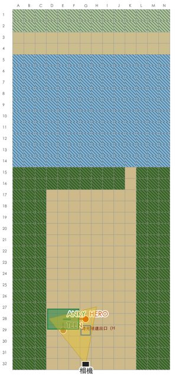
畫面被 HERO 沾滿泥的雙腳與腳邊一顆比香蕉還大的牙齒占滿，俯視往下看地面。
附的參考圖：ENV_ARRIVE_DUSK_NORIVER REF_HERO_NOHAT REF_TOOTH PAIR2_TOOTH
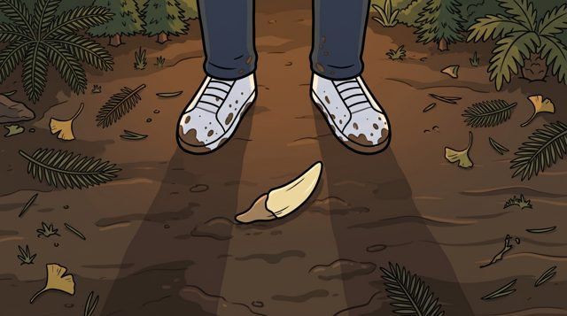
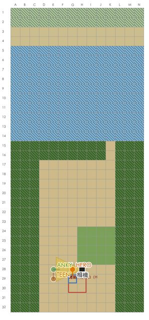
HERO 在畫面中央，一手高舉大牙齒得意地笑；胸前裂掉的小相機正從背帶上滑落往下掉（前景下方）。
附的參考圖：ENV_ARRIVE_DUSK_NORIVER REF_HERO_NOHAT REF_ANKY PAIR2_ANKY REF_TOOTH REF_PROPS PAIR2_TOOTH
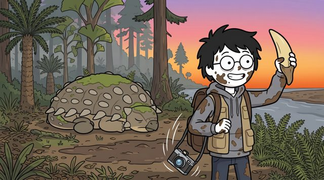
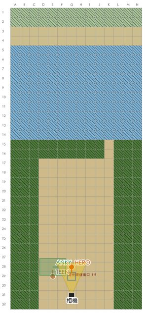
HERO 在畫面右前景（後側 3/4，背對偏側），伸手遞出一片洋芋片；ANKY 的大頭在畫面左／中，低下來湊近那片洋芋片。
附的參考圖：ENV_ARRIVE_DUSK_NORIVER REF_HERO_NOHAT REF_ANKY KNEEL_ANKY
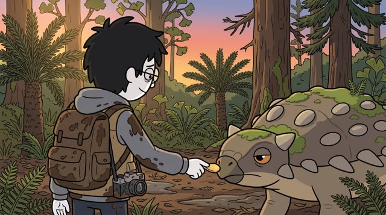
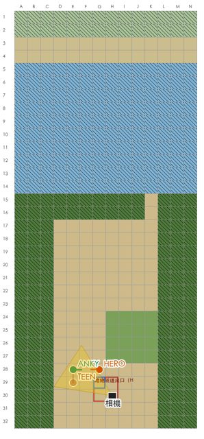
拉遠一級：HERO 膝上入鏡，和低頭湊近的甲龍頭與前半身一起入鏡，互動的空間更完整。
附的參考圖：ENV_ARRIVE_DUSK_NORIVER REF_HERO_NOHAT REF_ANKY KNEEL_ANKY
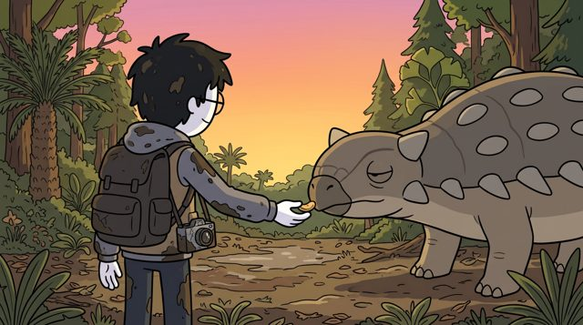
ANKY 的大頭占滿畫面，嘴角沾著一小塊洋芋片碎屑，一臉面無表情慢慢嚼。
附的參考圖：ENV_ARRIVE_DUSK_NORIVER REF_ANKY
HERO 在畫面中央，雙手捧著那顆小小的回家按鈕，用拇指按下去，低頭盯著它，一臉『怎麼沒反應』。
附的參考圖：ENV_ARRIVE_DUSK_NORIVER REF_HERO_NOHAT REF_ANKY PAIR2_ANKY REF_PROPS
畫面被 HERO 的兩隻手占滿：一手用力往另一手上貼著膠帶的按鈕拍下去，帶動作線；俯視往下看。
附的參考圖：ENV_ARRIVE_DUSK_NORIVER REF_HERO_NOHAT REF_PROPS
畫面左下方是亮起的藍色時光隧道；HERO 側身騰空往左（南）一躍、雙腳往後踢，懷裡抱著大牙齒和裂掉的相機；他身後地上留著背包。
附的參考圖：ENV_ARRIVE_DUSK_NORIVER REF_HERO_NOHAT REF_ANKY PAIR2_ANKY REF_TOOTH REF_PROPS REF_PORTAL PAIR2_TOOTH
畫面中央那道藍色時光隧道正縮小、收合到消失；地上留著 HERO 的背包和一個壓扁的空洋芋片袋；背景左側 ANKY 又睡成一顆石頭。
附的參考圖：ENV_ARRIVE_DUSK_NORIVER REF_ANKY REF_PORTAL
畫面中央地上是 HERO 的背包，微微開著口，被留了下來；旁邊一個壓扁的空洋芋片袋；背景 ANKY 睡成一顆大石頭；隧道已消失。
附的參考圖：ENV_ARRIVE_DUSK_NORIVER REF_ANKY
EP2 每格放定稿選的那張
右邊是這格的地圖，符號看每段開頭的圖例
圖例（抵達點（森林空地））
地形
地上物（紅框；藍框＝空中）
G29–H30D27–F28G29圓點＝角色（淡色＝這格沒入鏡） 短線＝面向 黑框＝相機 黃色＝相機視野
EP1 那片空地：石頭還在原地睡覺，背包就在牠旁邊
附的參考圖：REF_ANKY KNEEL_ANKY PAIR2_ANKY REF_PLANTS REF_SKYC_1
空地邊：高高的棕櫚樹，和幾棵開著粉紅花的樹，陽光很暖
附的參考圖：REF_HERO_NOBAG REF_PROPS REF_PLANTS REF_SKYC_1
石頭趴著打呼，HERO 蹲在旁邊看牠
附的參考圖：REF_HERO_NOBAG REF_PROPS REF_ANKY KNEEL_ANKY PAIR2_ANKY REF_PLANTS REF_SKYC_1
HERO 把洋芋片倒給石頭，石頭吃得很開心
附的參考圖：REF_HERO_NOBAG REF_PROPS REF_ANKY KNEEL_ANKY PAIR2_ANKY REF_PLANTS REF_SKYC_1
HERO 默默往旁邊退了兩步
附的參考圖：REF_HERO_NOBAG REF_PROPS REF_ANKY PAIR2_ANKY REF_PLANTS REF_SKYC_1
HERO 把新袋子塞進背包，把背包放回石頭身邊，只背著相機走開
附的參考圖：REF_HERO_NOBAG REF_PROPS REF_ANKY KNEEL_ANKY PAIR2_ANKY REF_PLANTS REF_SKYC_1
HERO 把新袋子塞進背包，把背包放回石頭身邊，只背著相機走開
附的參考圖：REF_HERO_NOBAG REF_PROPS REF_ANKY KNEEL_ANKY PAIR2_ANKY REF_PLANTS REF_SKYC_1
EP2 每格放定稿選的那張
右邊是這格的地圖，符號看每段開頭的圖例
圖例（抵達點（森林空地））
地形
地上物（紅框；藍框＝空中）
G29–H30D27–F28G29圓點＝角色（淡色＝這格沒入鏡） 短線＝面向 黑框＝相機 黃色＝相機視野
HERO 從土丘衝下來，跑回空地，從背包裡翻出生存指南
附的參考圖：REF_HERO_NOBAG REF_PROPS REF_ANKY KNEEL_ANKY PAIR2_ANKY REF_PLANTS REF_SKYC_5
HERO 把指南塞回地上的背包，蹲下來要翻按鈕；石頭搶先把頭鑽進背包
附的參考圖：REF_HERO_NOBAG REF_PROPS REF_PLANTS REF_SKYC_5
HERO 把指南塞回地上的背包，蹲下來要翻按鈕；石頭搶先把頭鑽進背包
附的參考圖：REF_HERO_NOBAG REF_PROPS REF_ANKY KNEEL_ANKY PAIR2_ANKY REF_PLANTS REF_SKYC_5
地面開始晃，小石頭在地上跳動
附的參考圖：REF_HERO_NOBAG REF_PROPS REF_ANKY PAIR2_ANKY REF_PLANTS REF_SKYC_5
石頭嚇得跳起來就跑，背包背帶勾在牠的尾錘上，跟著被帶走
附的參考圖：REF_HERO_NOBAG REF_PROPS REF_ANKY PAIR2_ANKY REF_PLANTS REF_SKYC_5
背包勾在尾錘上甩來甩去，HERO 伸手想抓又縮回來
附的參考圖：REF_HERO_NOBAG REF_PROPS REF_ANKY PAIR2_ANKY REF_PLANTS REF_SKYC_5
EP2 每格放定稿選的那張
右邊是這格的地圖，符號看每段開頭的圖例
圖例（抵達點（森林空地））
地形
地上物（紅框；藍框＝空中）
G29–H30D27–F28G29圓點＝角色（淡色＝這格沒入鏡） 短線＝面向 黑框＝相機 黃色＝相機視野
指南的爆炸範圍圖：撞擊點往外一圈一圈，圈圈依序蓋到德州、紐約、阿根廷（書上 p.13，手繪重畫，沒有字；v2 S02-6、S02-7 改成指南內頁）
附的參考圖：REF_HERO_NOBAG REF_PROPS REF_ASTEROID
指南內頁：世界地圖。撞擊點骷髏、北美洲火焰、大部分地方雪花、很遠的熱帶島嶼一個太陽和箭頭（沒有字）
附的參考圖：REF_HERO_NOBAG REF_PROPS
EP2 每格放定稿選的那張
右邊是這格的地圖，符號看每段開頭的圖例
圖例（抵達點（森林空地））
地形
地上物（紅框；藍框＝空中）
G29–H30D27–F28G29圓點＝角色（淡色＝這格沒入鏡） 短線＝面向 黑框＝相機 黃色＝相機視野
HERO 在後面追，石頭在前面
附的參考圖：REF_HERO_NOBAG REF_ANKY PAIR2_ANKY REF_PLANTS REF_SKYC_6
原因：Claude 手寫背景句時只寫腳邊地面或左右兩側，沒寫鏡頭正前方最遠處；平視時人物頭後面是遠景（空地盡頭的樹林），背景句沒寫，附的 ENV_ARRIVE_* 又只是天空＋地面的顏色漸層，模型沒有線索，就畫成天空。
EP1N-06-01 EP1N-06-06 EP1N-06-06W EP1N-06-08 EP1N-06-08W EP1N-06-09 EP1N-06-09W EP1N-06-11 EP1N-17-02 EP1N-17-02W EP1N-17-05 EP1N-17-06 EP1N-17-06W EP1N-17-08 EP1N-17-09 EP1N-17-09W EP1N-17-11 EP1N-17-14 EP1N-17-15
EP1N-06-04 EP1N-06-05 EP1N-06-07 EP1N-17-01 EP1N-17-03 EP1N-17-03W EP1N-17-04 EP1N-17-07 EP1N-17-10 EP1N-17-12 EP1N-17-13
原因：第 17 場每格都附 ENV_ARRIVE_DUSK，這張參考圖下半右邊三分之一是一整塊河水；prompt 又寫「the ground, and the water where there is any … paint those surfaces in exactly those colors and textures」，等於叫模型畫水。另有 3 格背景句寫了地圖上看不到的河。
EP1N-17-01 EP1N-17-02 EP1N-17-02W EP1N-17-03 EP1N-17-03W EP1N-17-04 EP1N-17-05 EP1N-17-06 EP1N-17-06W EP1N-17-07 EP1N-17-08 EP1N-17-09 EP1N-17-09W EP1N-17-10 EP1N-17-11 EP1N-17-12 EP1N-17-13 EP1N-17-14 EP1N-17-15
EP1N-17-01 EP1N-17-02 EP1N-17-02W EP1N-17-03 EP1N-17-03W EP1N-17-04 EP1N-17-05 EP1N-17-06 EP1N-17-06W EP1N-17-07 EP1N-17-08 EP1N-17-09 EP1N-17-09W EP1N-17-10 EP1N-17-11 EP1N-17-12 EP1N-17-13 EP1N-17-14 EP1N-17-15
EP1N-17-02W EP1N-17-06 EP1N-17-15
EP1N-06-01 EP1N-06-02 EP1N-06-03 EP1N-06-04 EP1N-06-05 EP1N-06-06 EP1N-06-06W EP1N-06-07 EP1N-06-08 EP1N-06-08W EP1N-06-09 EP1N-06-09W EP1N-06-10 EP1N-06-11
資料：docs/requests/ 裡的 EP1N_bg_far_check.json（scripts/check_far_bg.py）、EP1N_river_check.json（scripts/check_river_17.py）；程式從地圖算，分類是 Claude 逐句讀背景句判斷